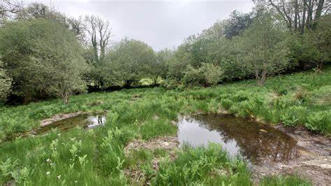

Wildlife Habitat Restoration
We collaborate with conservationists to restore and protect habitats for local wildlife and endangered species. Our work helps maintain biodiversity and ecosystem health in our region.
Species Spotlight: Eastern Bluebird
Once in decline due to habitat loss, our nest box program has helped the Eastern Bluebird population recover by 35% in our county over the past decade.
Our Restoration Projects
- Wetland Rehabilitation: Restoring 50 acres of critical wetland habitat
- Pollinator Pathways: Creating corridors of native plants for bees and butterflies
- Urban Wildlife Corridors: Connecting green spaces for safe animal movement
- Nest Box Programs: Installing and monitoring bird and bat houses


How You Can Help
Even small actions can create wildlife habitat:
- Plant native species in your yard
- Reduce pesticide use
- Provide water sources like bird baths
- Leave some "wild" areas in your landscape
Volunteer for Habitat Work
Certify Your Wildlife Garden
 (1).png)